Inhalt Index DeskTop Bronstein

 Numerische Mathematik Nutzung von Computern Numerische Probleme beim Rechnen auf Computern Normalisierte Dezimalzahlen und Rundung
Numerische Mathematik Nutzung von Computern Numerische Probleme beim Rechnen auf Computern Normalisierte Dezimalzahlen und Rundung


Jeder numerische Prozeß setzt sich letztlich aus einer Folge von Grundrechenoperationen zusammen. Probleme ergeben sich insbesondere durch die endliche Stellenzahl bei der Gleitpunktarithmetik. Diese sollen kurz betrachtet werden. Es sei vorausgesetzt, daß x und y normalisierte fehlerfreie Gleitkommazahlen gleichen Vorzeichens mit einem Wert 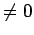 sind.
| 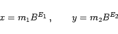 | (19.269a) |
| 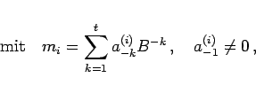 | (19.269b) |
| 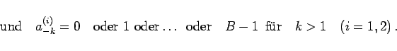 | (19.269c) |
Für E1 > E2 erfolgt der Exponentenangleich an 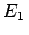, da wegen der Normalisierung nur eine Linksverschiebung des Punktes möglich ist. Die Mantissen werden addiert.
| 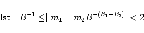 | (19.270a) |
| 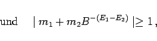 | (19.270b) |
so erfolgt die Punktverschiebung um eine Stelle nach links bei gleichzeitiger Erhöhung des Exponenten um eins (Additionsüberlauf).
| Beispiel |
|
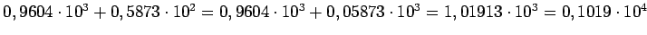. |
Der Exponentenangleich erfolgt wie bei der Addition, die Mantissen werden subtrahiert. Ist
| 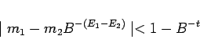 | (19.271a) |
und
| 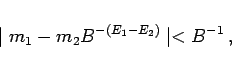 | (19.271b) |
so erfolgt die Punktverschiebung um maximal t Stellen nach rechts mit entsprechender Erniedrigung des Exponenten.
| Beispiel |
|
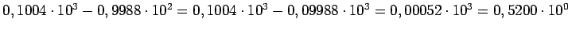. Das Beispiel zeigt den kritischen Fall der Auslöschung führender Nullen. Durch die beschränkte Stellenzahl (hier 4) werden außerdem von rechts Nullen eingeschleppt, die eine erhöhte Anzahl gültiger Ziffern vortäuschen. |
Die Exponenten werden addiert und die Mantissen multipliziert. Ist
| 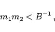 | (19.272) |
so wird der Dezimalpunkt bei gleichzeitiger Erniedrigung des Exponenten um eins um eine Stelle nach rechts verschoben (Multiplikationsunterlauf).
| Beispiel |
|
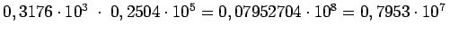. |
Die Exponenten werden subtrahiert und die Mantissen dividiert. Ist
| 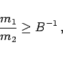 | (19.273) |
so wird der Dezimalpunkt bei gleichzeitiger Erhöhung des Exponenten um eins um eine Stelle nach links verschoben (Divisionsüberlauf).
| Beispiel |
|
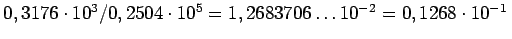. |
Der Resultatfehler bei den vier Grundrechenarten mit vorausgesetzten fehlerfreien Operanden resultiert dann lediglich aus der Rundung. Für den relativen Fehler gilt mit der Stellenzahl t und der Basis B die Schranke
| 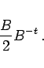 | (19.274) |
Es ist ersichtlich, daß die Subtraktion nahezu gleich großer Gleitkommazahlen die kritische Operation ist. Wenn möglich, sollte in solchen Fällen durch Prioritätenänderungen oder andere Anordnung der Operanden die Reihenfolge der Operationen geändert werden.